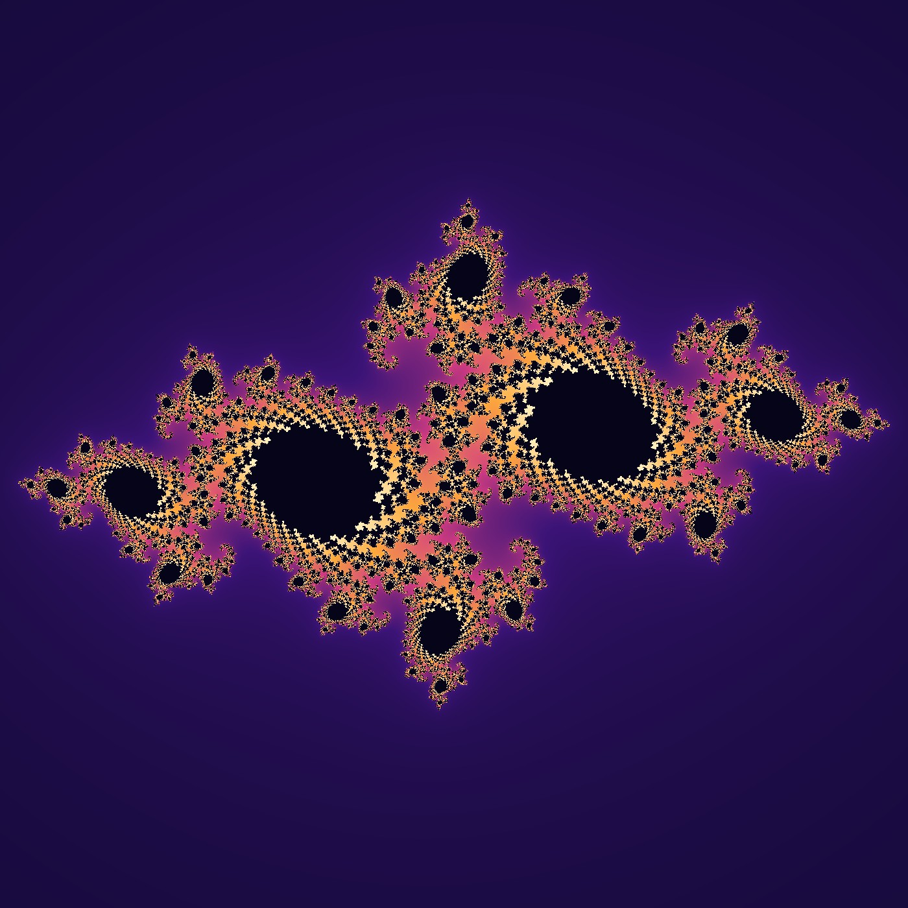

Idea
Break lines as a shortest-path problem
- Every legal break is a node
- Every line between two breaks is an edge
- The cost of an edge is the badness of that line
- The best paragraph is the cheapest path
How a layout engine decides where a line, a figure or a page ends, and why the greedy answer is rarely the best one.
ways to break a paragraph of n possible break points. We do not try them all.
pass over the document for a greedy break: fast, simple, and it never looks back.
worst case for the shortest-path view, which sees the whole paragraph at once.

// best[i]: the cheapest way to end a line at break i let mut best = vec![f64::INFINITY; n + 1]; let mut from = vec![0; n + 1]; best[0] = 0.0; for j in 1..=n { for i in (0..j).rev() { let r = ratio(i, j, width); if r < -1.0 { break; } // too full let cost = best[i] + badness(r); if cost < best[j] { best[j] = cost; from[j] = i; } } }
The best way to find a good line break is to stop deciding one line at a time.A paragraph, seen as a whole
A line stretched by a quarter costs almost nothing.
Double the stretch and the cost is eight times larger, because it grows with the cube.
Pick breaks for a paragraph by the cheapest path.
DoneLet a paragraph stretch or shrink by a line to improve the page.
DonePlace figures at the top or the bottom, from columns to the page.
DoneFlow text around floats at the sides of a paragraph.
NextThank you. Slides, source and this PDF are made from one HTML file.